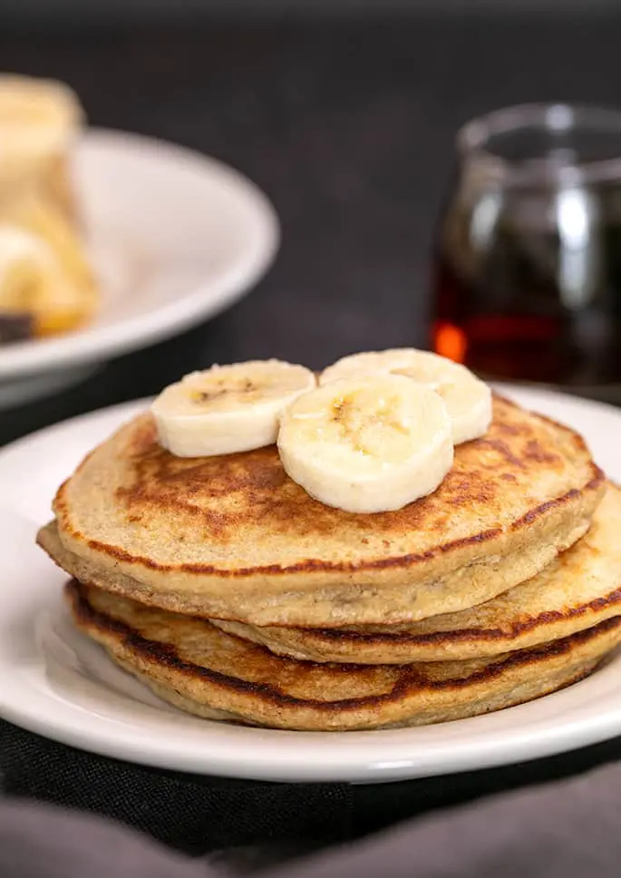

Healthy Pancakes

Gluten-free banana pancakes (only 3 ingredients)
These healthy banana pancakes are perfect for breakfast, have no flour and no added sugar.
Ingredients:
- 1 medium banana (120g)
- 1 egg
- 1/3 cup + 1 tbsp ground oats or oat flour (40g)
- *optional: 1/2 tsp baking powder
Steps:
- In a bowl add banana and mash with a fork until smooth.
- Beat one egg and combine with the banana.
- Add ground oats (and baking powder if using) and mix until the thick batter is formed. If the batter is runny add extra tbsp oats, and if it's too thick add 1 tbsp water or milk.
- Let it sit for 5 minutes for oats to soak up the liquid.
- Preheat your skillet over medium low heat and fry your pancakes for 2 minutes on each side.
- Serve with maple syrup, peanut butter or quick apple topping.